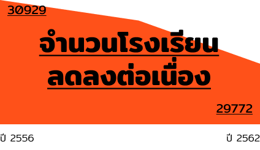

โรงเรียนเล็กจะหายไป
...ใครตัดสิน
ความเป็นมา
ภายใต้รัฐธรรมนูญที่กำหนดให้รัฐ “ต้อง” จัดการศึกษาให้แก่ประชาชน คำถามหนึ่งที่ถูกถามและเป็นปัญหามาอย่างยาวนานว่าจะออกแบบการศึกษาหรือ “โรงเรียน” อย่างไรให้ทั้ง “ถูก” และ “ดี” ?
ในมิติหนึ่งหากดู “การจัดสรรงบประมาณ” ของรัฐให้แก่โรงเรียน 40,000 แห่งในปัจจุบันแบบ “เหมาจ่าย” ต่อหัวนักเรียน ซึ่งสะท้อนมุมมองของรัฐที่ว่าเด็กทุกคนต้องได้รับทรัพยากรเท่ากันอย่างไม่เลือกปฏิบัติ
แต่การตั้งกฎกติกาในปัจจุบันจะสามารถตอบโจทย์การศึกษาที่ถูกและดีในโรงเรียนที่มีความแตกต่างกันในแต่ละพื้นที่ได้ดีเพียงใด หากไม่ จะมีทางออกอะไรบ้างสำหรับโรงเรียน และใครจะเป็นคนตัดสิน… ?
แผนที่แสดงอะไรอยู่ ?
ตำแหน่งของโรงเรียนทั้งหมด
องค์ประกอบของโรงเรียน
ก่อนที่จะตอบคำถามดังกล่าว อาจจะต้อง ถอยออกไปและถามว่าอะไรทำให้โรงเรียนยังเป็นโรงเรียนอยู่ได้และทำหน้าที่ให้การศึกษาที่ถูกและดีได้?
มองอย่างผิวเผินองค์ประกอบของโรงเรียนควรจะต้องประกอบด้วย การเรียนการสอนที่มีคุณภาพ, เงินงบประมาณที่เพียงพอ และต้องสอดคล้องกับพื้นที่และชุมชน เช่นเดินทางสะดวกหรือสอดรับกับความเชื่อทางศาสนา เป็นต้น
แผนที่แสดงอะไรอยู่ ?
จำนวนโรงเรียนทั่วประเทศ ขนาดวงที่ใหญ่และสีที่เข้มหมายถึงโรงเรียนที่มีขนาดใหญ่
ปริมาณลดลงของเด็กและโรงเรียน
อย่างไรก็ตาม จากความจริงที่ว่าภายใต้นโยบายการจัดสรรงบประมาณปัจจุบัน ขนาดของโรงเรียนย่อมเกี่ยวข้องกับความสามารถในการคงอยู่ของโรงเรียนอย่างมาก
จากนโยบายยแบบนี้แปลว่าโรงเรียนขนาดใหญ่กว่าจะมีงบประมาณรวมมากกว่า ขณะที่โรงเรียนขนาดเล็กกว่าจะได้รับงบประมาณรวมน้อยกว่า แม้ว่างบประมาณต่อหัวนักเรียนจะเท่ากันก็ตาม และด้วยแนวโน้มของเด็กเกิดใหม่ที่ลดลงอย่างต่อเนื่องและโรงเรียนขนาดเล็กมีแนวโน้มเพิ่มขึ้นในทุกปี ทั้งแง่จำนวนโรงเรียนและจำนวนเด็กต่อโรงเรียน และกดดันให้เสา “งบประมาณ” ของโรงเรียนคลอนแคลนใกล้จะล้มลงเต็มที
แผนที่แสดงอะไรอยู่ ?
โรงเรียนที่จำนวนนักเรียนเปลี่ยนแปลงไปในทางบวกชัดเจน
โรงเรียนที่จำนวนนักเรียนเปลี่ยนแปลงไม่คงที่
โรงเรียนที่จำนวนนักเรียนเปลี่ยนแปลงไปในทางลบชัดเจน
วิกฤติของโรงเรียนเล็ก
งบประมาณไม่พอให้โรงเรียนเล็กดำเนินการ กลายเป็นวิกฤตของโรงเรียนขนาดเล็กที่ไม่อาจจะคงอยู่ได้ต่อไปในอนาคต และเป็นปัญหาสำคัญที่รัฐบาล รวมไปถึงประชาชนหรือชุมชนที่เกี่ยวข้องโดยตรงต้องเร่งหาทางออกให้ได้
แล้วแต่ละคนมองทางออกของปัญหานี้ไว้อย่างไร?
แผนที่แสดงอะไรอยู่ ?
โรงเรียนขนาดกลาง-ใหญ่-ใหญ่พิเศษ
โรงเรียนเล็ก
ยุบและควบรวม
ทางออกแรกถูกเสนอตรงมาจากภาครัฐเองว่าหากโรงเรียนขนาดเล็กมีงบประมาณไม่เพียงพอ เพราะจำนวนนักเรียนน้อยเกินไป ดังนั้นควรจะยุบหรือควบรวมโรงเรียนขนาดเล็กเข้าด้วยกันหรือเข้ากับโรงเรียนขนาดใหญ่ขึ้น เพื่อให้มีงบประมาณเพียงพอจะจัดการศึกษาได้ รวมไปถึงภาครัฐยังเชื่ออีกว่าคุณภาพการศึกษาจะดีขึ้นด้วย
อย่างไรก็ตาม ทางออกนี้อาจจะทำให้บทบาทของโรงเรียนไม่สอดคล้องกับความต้องการของชุมชนอีกต่อไป เช่น ต้องเดินทางไกลขึ้น มีต้นทุนค่าใช้จ่ายมากขึ้น หรือเรียนรู้ค่านิยมใหม่ที่ชุมชนไม่อยากให้เด็กเรียนรู้
กรณีศึกษาการยุบและควบรวม: ปทุมธานี
นอกจากนี้ การ “เลือก” ของรัฐอาจจะมีหลายแบบ และในแต่ละแบบย่อมต้องมีผลกระทบกับผู้คนที่แตกต่างกันด้วย ไม่ว่าจะเป็นต้นทุนการเดินทาง การประหยัดจากขนาดที่เกิดขึ้นในแต่ละโรงเรียน ฯลฯ
การปรับตัวด้านการบริหารของโรงเรียน
ทางออกที่สองมาจากตัวโรงเรียนขนาดเล็กที่ต้องหาทางจัดรูปแบบการเรียนการสอนใหม่ให้ประหยัดงบประมาณมากขึ้น ตัวอย่างหนึ่งคือการรวมกลุ่มโรงเรียนขนาดเล็กที่ใกล้กันเป็น “เครือข่ายโรงเรียน” ที่ใช้งบประมาณร่วมกันอย่างมีประสิทธิภาพ
กรณีศึกษา: การสร้างเครือข่ายแบ่งสรรทรัพยากร
กรณีศึกษาของ “แก่งจันทร์โมเดล” เป็นการรวมตัวกันของโรงเรียนขนาดเล็ก 4 แห่งในเขตพื้นที่จังหวัดเลยที่มีการจัดการเรียนการสอนในระดับชั้นอนุบาลาจนถึงประถม 6 ที่อยู่ห่างกันไม่ถึง 10 กิโลเมตร และรับภาระหน้าที่การสอนแค่บางช่วงชั้น เปรียบเสมือนเป็นโรงเรียนเดียวกัน แต่กระจายอยู่คนละพื้นที่ เช่น
โรงเรียน ก รับผิดชอบการสอนเฉพาะระดับชั้นประถมศึกษาปีที่ 1 – 2
โรงเรียน ข รับผิดชอบการสอนเฉพาะระดับชั้นประถมศึกษาปีที่ 3 – 4
โรงเรียน ค รับผิดชอบการสอนเฉพาะระดับชั้นประถมศึกษาปีที่ 5 – 6
ประโยชน์จากการจัดการสอนแบบนี้ ทำให้จำนวนครูเฉลี่ยต่อระดับชั้นมากขึ้น นอกจากนี้ เมื่อห้องเรียนมีจำนวนนักเรียนมากขึ้นจนถึงขนาดที่เหมาะสมจะช่วยสร้างการประหยัดจากขนาด (อาจจะน้อยกว่าทางออกแรก) อย่างไรก็ตาม สำหรับการเดินทางระหว่างโรงเรียนที่อาจจะเพิ่มขึ้นยังเป็นจุดอ่อนสำคัญของโมเดลนี้ที่จะต้องจัดหาค่าใช้จ่ายมารองรับให้เพียงพอ ซึ่งอาจจะมากกว่าการประหยัดที่เกิดขึ้น (แต่อาจจะน้อยกว่าทางออกแรก) ขณะที่อีกสองเสาหลักแทบไม่ได้เปลี่ยบแปลง โรงเรียนยังคงอยู่เป็นศูนย์กลางของชุมชน ส่วนคุณภาพการเรียนการสอนไม่ได้เปลี่ยนแปลงไปหรืออาจจะดีขึ้น เนื่องจากยังเป็นครูชุดเดิม แต่อุปกรณ์การเรียนอาจจะดีขึ้น เพราะสามารถลงทุนให้เกิดการประหยัดจากขนาดได้
แผนที่แสดงอะไรอยู่ ?
กลุ่มเครือข่ายแก่งจันทร์
พื้นที่นวัตกรรม... ทางออก?
อีกกลไกหนึ่งที่เกิดขึ้นเมื่อปีที่ผ่านมาคือพ.ร.บ.พื้นที่นวัตกรรมการศึกษาที่มีเป้าหมายกระจายอำนาจและให้ความอิสระแก่ชุมชน จนมีโรงเรียนที่เข้าสู่พื้นที่ดังกล่าวแล้วกว่า 270 โรงเรียน และจะบังคับจนถึงปี 2569
เมื่อดูโครงสร้างของกฎหมายอาจจะเห็นแสงสว่างที่ปลายอุโมงค์ที่กำหนดให้มีกรรมการมาจากทุกภาคส่วนในสัดส่วนพอๆกัน เพื่อเป็นเวทีให้พูดคุยหารือกัน ต่างจากเดิมที่ทุกอย่างหากไม่ถูกกำหนดมาจากส่วนกลาง ชุมชนก็ต้องเป็นผู้ริเริ่มเอง จนขาดจุดเชื่อมโยงระหว่างโมเดลของชุมชนสู่การประยุกต์ใช้ระดับประเทศ
และบางที่โจทย์การศึกษาอาจจะไปไกลว่าการยุบหรือไม่ยุบอีกแล้ว แต่จะเป็นอย่างไรอีก 6 ปีรอดูกัน...
แผนที่แสดงอะไรอยู่ ?
กลุ่มจังหวัดที่นำนวัตกรรมไปใช้
บทสรุป
หากถามว่าใครต้องตัดสิน… อาจจะตอบไม่ได้ง่ายนัก แต่ละชุมชน แต่ละโรงเรียน ต่างมีความพร้อมและความต้องการที่แตกต่างกันไป
ในมุมมองภาครัฐอาจจะต้องการควบรวมโรงเรียนให้ใหญ่และมีงบประมาณมากขึ้น ส่วนมุมมองโรงเรียนอาจจะเน้นไปที่การหานวัตกรรมและการบริหารงบประมาณรูปแบบใหม่ๆ และแต่ละชุมชนเองอาจจะมีนวัตกรรมอื่นๆที่เหมาะสมกับตัวเอง
ขณะที่พื้นที่นวัตกรรมจะเป็นเวทีร่วมกันของภาครัฐและภาคปฏิบัติที่จะหันมาพูดคุยกันได้และช่วยกันหาทางออกที่ดีที่สุดร่วมกัน
ขอขอบคุณ
ข้อมูลและคำแนะนำ
ข้อมูลจากโครงการประเทศไทยในอนาคต Future Thailand : มิติที่ 3 การศึกษา (อยู่ในระหว่างการศึกษา) โดย สถาบันวิจัยเพื่อการพัฒนาประเทศไทย สนับสนุนโดย สำนักงานคณะกรรมการวิจัยแห่งชาติ
ผู้สนับสนุนโครงการ
Data Journalism Workshop 2020

ข้อมูลอ้างอิง
ข้อมูลรายชื่อโรงเรียน สพฐ โดย ระบบสารสนเทศเพื่อบริหาร การศึกษา (EMIS)
Thailand GeoJson https://github.com/apisit/thailand.json
ข้อมูลพื้นฐานสถานศึกษาในประเทศไทย https://data.go.th/dataset/thailand-school
หมายเหตุ: ข้อมูลโรงเรียนในบทความนี้มีเพียง 60% จากข้อมูลทั้งหมดของข้อมูลพื้นฐานสถานศึกษาในประเทศไทย เนื่องจากความไม่สมบูรณ์ของข้อมูล
คณะผู้จัดทำ
อธิวรรธน์ วงศ์ไวศยวรรณ
ภูมิใจ โพธิวนากุล
บูรกร ทิพยสกุลชัย